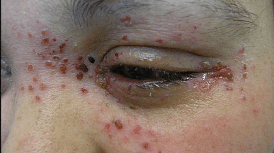
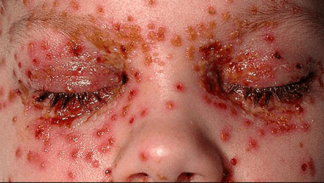

Eczema herpeticum is a rare, painful skin rash usually caused by the herpes simplex virus (HSV). HSV1 is the virus
that causes cold sores, and it can spread through skin-to-skin contact.
EH most commonly affects infants and young children who have eczema or other inflammatory skin conditions. But it
also can affect adults.
Fast Fact
This condition was initially called Kaposi varicelliform eruption, after the person who first described it and
thought the eruption resembled that of chicken pox.
EH is treated with antiviral drugs, and it can become severe and life-threatening if not treated quickly. The viral
infection is contagious. If you have EH, you should be careful of spreading it to other people who have eczema or
compromised immune systems.
Although EH is uncommon, its occurrence has reportedly been increasing in recent years. Keep reading to learn how
to identify it, what causes it, and more.


Eczema herpeticum is caused by Herpes simplex virus HSV1, the virus that causes cold sores; it can also be caused
by other related viruses.
Eczema herpeticum develops when the virus infects large areas of skin, rather than being confined to a small area
as in the common cold sore. It develops in the skin of susceptible people, usually those with a pre-existing
diagnosis of atopic eczema. Sometimes it begins as a cold sore and then spreads to affect the face and other areas
of the body, but it may occur without a preceding cold sore.
Patients whose eczema began in infancy or those with severe eczema are at higher risk of developing eczema
herpeticum. It can also be triggered by trauma or cosmetic procedures (lasers, skin peels, dermabrasion).
No.
Your doctor can likely diagnose EH by its appearance, but they may want to confirm the diagnosis. This is
because EH can resemble some bacterial infections, such as impetigo. It also can look like a severe flare-up of
eczema or other skin ailments.
However, your doctor should have you take systemic antiviral drugs immediately if EH is suspected. Due to the
serious complications of EH, your doctor likely won’t wait for tests to confirm the presence of the virus.
Your doctor can confirm an EH diagnosis by taking a smear of a blister to check for the virus. Several tests are
available to identify the virus, including culturing the sample, identifying antibodies to the virus, or examining
it under a light microscope.
It’s also possible to have a secondary bacterial infection, which should be identified for proper treatment.
If left untreated — or not treated soon enough — EH can lead to blindness (though this is rare) and other
complications. If the lesions are near your eyes, your doctor should refer you to a specialist for evaluation.
HSV can infect your eyes, damaging the cornea.
A 2012 study recommends that doctors routinely check eczema outpatients for signs of EH, because of its
potential seriousness. It’s one of the true dermatologic emergencies, and prompt diagnosis and treatment are
essential.
Yes – with antiviral treatment. However, the infection can reoccur in some people.